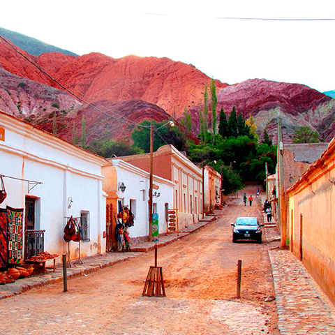

Elegí entre nuestros mejores destinos
Mar del Plata

La ciudad es uno de los más importantes centros turísticos de Argentina y recibe durante cada temporada veraniega aproximadamente entre dos y tres millones de visitantes lo que produce un salto en el número de habitantes, que se ha elevado en casos extremos hasta multiplicar dos veces la población estable. A fin de recibir semejante oleada de visitantes, posee una completa infraestructura turística. Además de la oferta de verano, la llamada «Perla del Atlántico» o la «Biarritz argentina» -por la marcada similitud con esa ciudad francesa- cuenta con una variada oferta de temporada baja: turismo deportivo, ecológico, aventura, pesca y eventos culturales son sólo algunas de las alternativas que esta ciudad ofrece a sus visitantes como también un interesante patrimonio histórico y natural.
Glaciar Perito Moreno

El Glaciar forma una represa con las aguas del Lago Argentino, esto genera un desnivel y a la vez una filtración de hielo que genera un túnel con una cueva de cerca de 50 metros de altura. ¡Todo un atractivo turístico!. Es la puerta de acceso más cercana al Parque Nacional de los Nevados donde se encuentran el Glaciar Perito Moreno y el Cerro Fitz Roy. Durante tu estadía en El Calafate podrás encontrar diferentes tours a lo largo de todo el parque; que pueden incluir caminatas, lugares y equipos para esquiar y paseos en bus.
San Salvador de Jujuy
San Salvador de Jujuy es una ciudad moderna que conserva costumbres ancestrales plasmadas en su historia, cultura, arte y gastronomía. Tiene una identidad propia e inigualable. Cualquier camino que tomes te conducirá a lugares con una naturaleza espléndida; que sumado a la calidad y variedad de sus servicios, hacen de ella un punto estratégico para alojarse y conocer todas las regiones de la provincia. San Salvador de Jujuy está cerca de todo. Aquí comprenderás que relajarse en un ámbito urbano es posible. Te invitamos a recorrerla, disfrutar de sus festivales, paisajes y la calidez de su gente.
Nuestros destinos Premium te esperan
Dubai
En los últimos años Dubai ha ganado fama y popularidad a nivel mundial como destino turístico. Ya que como destino de vacaciones, el turismo en Dubai ofrece un amplio rango de posibilidades, desde la animada actividad de los centros comerciales y el zoco, hasta la paz que se vive en el desierto. Por lo que se ha convertido en un gran destino para hacer turismo.
Islas Bahamas
Al igual que las conchas marinas, no hay dos vacaciones iguales en las Bahamas. Con opciones tan diversas como sus 700 islas, es un lugar en el que puedes encontrar exactamente la escapada que más te guste. ¿Buscas un destino familiar, un lugar de escapada para los enamorados, una meca de los juegos de azar, un paraíso para los pasajeros de cruceros o un mercado internacional para los compradores? Las Bahamas es todo eso… y mucho más.
Islas Maldivas
¿Querés ser la envidia de todos tus amigos? Contales al pasar: “Me voy a las Maldivas de vacaciones”, preferiblemente en pleno invierno. Nada dice “paraíso” como las Maldivas, una cadena de islas de 26 atolones con playas de arenas finas, agua turquesa y resorts estilo bungalow sobre el agua.